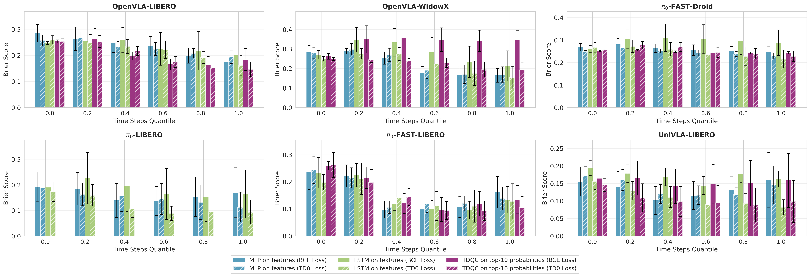
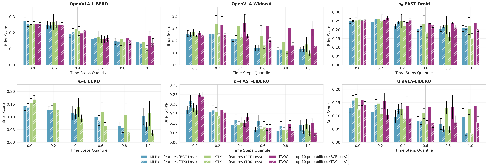
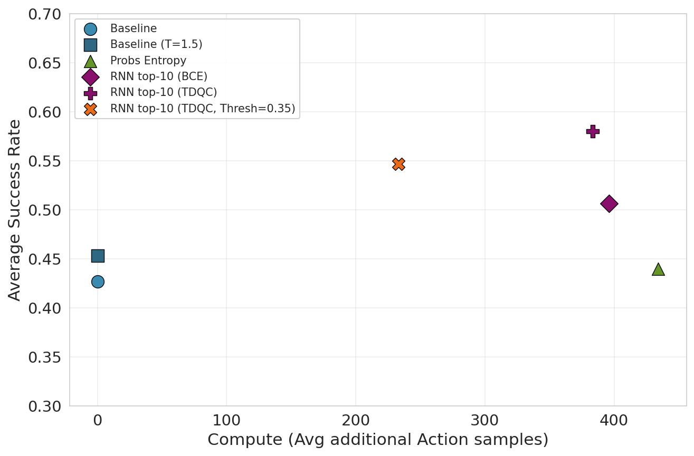
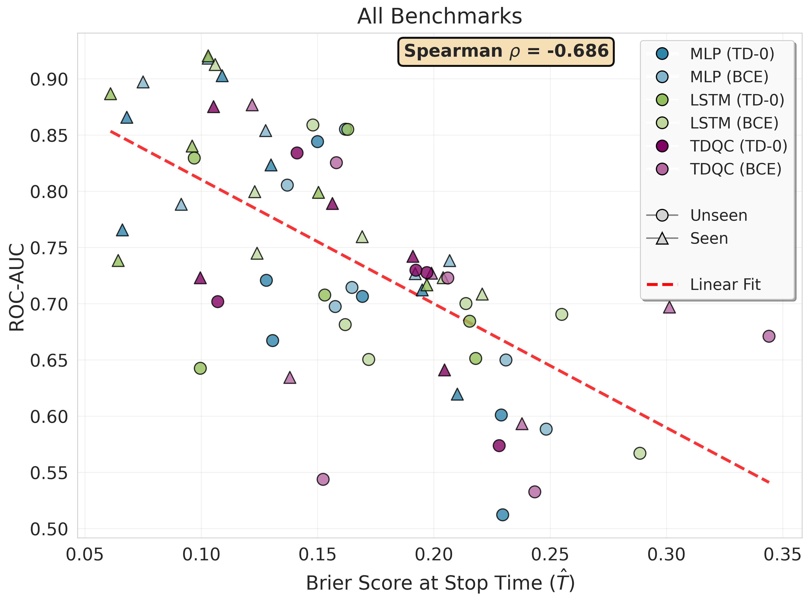
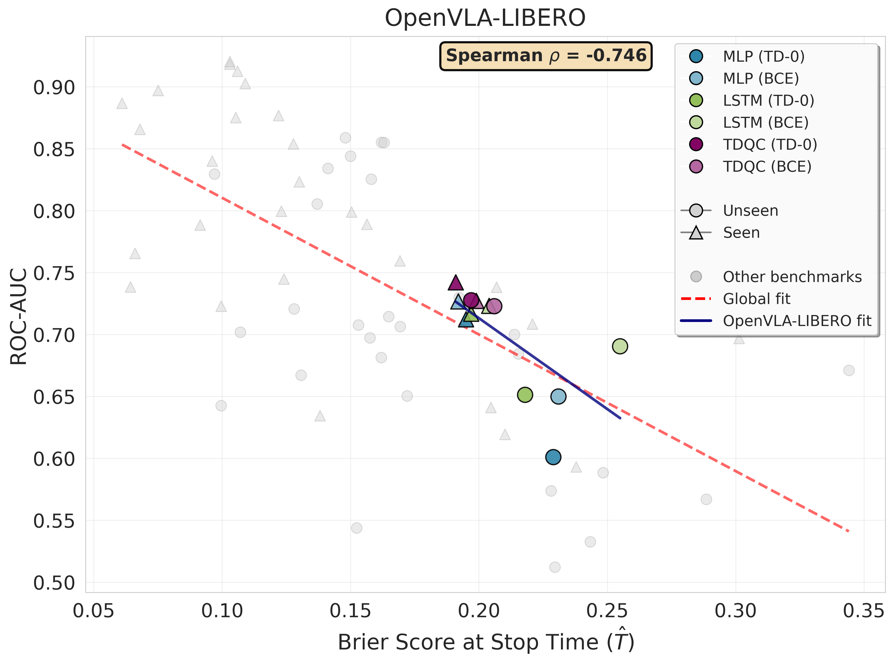

Recent advances in vision-language-action (VLA) models for robotics have highlighted the importance of reliable uncertainty quantification in sequential tasks. However, assessing and improving calibration in such settings remains mostly unexplored, especially when only partial trajectories are observed. In this work, we formulate sequential calibration for episodic tasks, where task-success confidence is produced along an episode, while success is determined at the end of it. We introduce a sequential extension of the Brier score and show that, for binary outcomes, its risk minimizer coincides with the VLA policy's value function. This connection bridges uncertainty calibration and reinforcement learning, enabling the use of temporal-difference (TD) value estimation as a principled calibration mechanism over time. We empirically show that TD calibration improves performance relative to the state-of-the-art on simulated and real-robot data. Interestingly, we show that when calibrated using TD, the VLA's single-step action probabilities can yield competitive uncertainty estimates, in contrast to recent findings that employed different calibration techniques.
A coherent formulation for calibration in sequential tasks, unifying recent VLA failure-detection work with the broader calibration literature.
Sequential calibration is linked to value prediction in reinforcement learning, deriving a novel TD-based calibration method — TDQC.
Using only action probabilities, TDQC matches or improves SAFE variants that require hidden-state access — often unavailable through APIs.
TD-based losses achieve state-of-the-art early detection on LIBERO with OpenVLA, π₀, and π₀-FAST, and on a Franka real-robot dataset.
The TDQC value predictor guides action selection within policy-sampled actions, yielding a 15% increase in success rate of OpenVLA on LIBERO.
Let \(h_t\) denote the history of observations and actions up to time \(t\) in a trajectory of length \(T\), and let \(y \in \{0,1\}\) denote final task success. We wish to learn a function \(f_\theta : \mathcal{H} \to [0,1]\) such that \(f_\theta(h_t)\) is a calibrated estimate of \(\Pr[\text{success} \mid h_t]\) at every step.
Standard post-hoc calibration (e.g., Platt scaling, temperature scaling) was designed for i.i.d. classification. In robotics, observations arrive as a temporally correlated sequence and the outcome label — binary task success — is revealed only at the end. This raises two core challenges:
The standard per-step Brier score \(\mathbb{E}[(f_\theta(x) - y)^2]\) ignores temporal structure. We instead minimize the sequential Brier score — the sum of squared prediction errors across all time-steps:
The unique minimizer satisfies \(f_\theta(h_t) = \mathbb{E}[y \mid h_t]\), i.e., the policy's value function \(V^\pi(h_t)\). This motivates the TDQC training objective, which telescopes the loss into:
TDQC Loss — TD consistency terms (left) enforce temporal coherence; the terminal term (right) anchors the final prediction to the ground-truth label.
We parameterize \(f_\theta\) as in the SAFE paper — a model that consumes the hidden states (or action probabilities) of the frozen VLA backbone at each step and outputs a success probability. We evaluate the following variants:
Evaluated on three robot manipulation benchmarks — LIBERO-10 (simulation), WidowX (real robot), and Franka (real robot) — across four frozen VLA backbones: OpenVLA, UniVLA, π₀, and π₀-FAST. Models are trained on the seen task split and evaluated on the held-out unseen split to test out-of-distribution generalization.
| VLA Model | OpenVLA | OpenVLA | UniVLA | \(\pi_0\)-FAST | \(\pi_0\)-FAST | \(\pi_0\) | |||||||
|---|---|---|---|---|---|---|---|---|---|---|---|---|---|
| Benchmark | LIBERO | WidowX | LIBERO | LIBERO | Franka | LIBERO | |||||||
| Eval Split | Seen | Unseen | Seen | Unseen | Seen | Unseen | Seen | Unseen | Seen | Unseen | Seen | Unseen | |
| Static Baselines | Max prob. | 0.395 | 0.390 | 0.572 | 0.579 | 0.909 | 0.899 | 0.320 | 0.318 | 0.331 | 0.323 | — | — |
| Avg prob. | 0.348 | 0.364 | 0.275 | 0.282 | 0.529 | 0.532 | 0.212 | 0.218 | 0.290 | 0.294 | — | — | |
| Running Avg prob. | 0.338 | 0.356 | 0.255 | 0.257 | 0.543 | 0.544 | 0.244 | 0.238 | 0.359 | 0.361 | — | — | |
| Avg entropy | 0.306 | 0.313 | 0.414 | 0.426 | 0.406 | 0.391 | 0.209 | 0.222 | 0.281 | 0.281 | — | — | |
| Running Avg entropy | 0.265 | 0.273 | 0.435 | 0.432 | 0.343 | 0.330 | 0.279 | 0.264 | 0.341 | 0.339 | — | — | |
| Learned Baselines (white-box) |
SAFE-RNN | 0.204 | 0.255 | 0.169 | 0.213 | 0.124 | 0.162 | 0.106 | 0.148 | 0.220 | 0.288 | 0.123 | 0.172 |
| SAFE-RNN-TDQC Ours | 0.197 | 0.218 | 0.096 | 0.153 | 0.064 | 0.100 | 0.103 | 0.163 | 0.150 | 0.215 | 0.061 | 0.097 | |
| SAFE-MLP BCE | 0.192 | 0.231 | 0.127 | 0.164 | 0.091 | 0.158 | 0.103 | 0.162 | 0.206 | 0.248 | 0.075 | 0.137 | |
| SAFE-MLP-TDQC Ours | 0.195 | 0.229 | 0.130 | 0.169 | 0.066 | 0.131 | 0.109 | 0.150 | 0.210 | 0.229 | 0.068 | 0.128 | |
| TDQC (black-box) | RNN-BCE Ours | 0.199 | 0.206 | 0.301 | 0.344 | 0.138 | 0.152 | 0.122 | 0.158 | 0.237 | 0.243 | — | — |
| RNN-TDQC Ours | 0.191 | 0.197 | 0.156 | 0.192 | 0.100 | 0.107 | 0.105 | 0.141 | 0.204 | 0.228 | — | — | |
Table 1 — Brier Score ↓. Results averaged over 21 seeds. "—" = metric not computable for this method. Red bold = best per column. TDQC achieves the lowest sequential Brier scores on all benchmarks except π₀-FAST LIBERO.
| VLA Model | OpenVLA | OpenVLA | UniVLA | \(\pi_0\)-FAST | \(\pi_0\)-FAST | \(\pi_0\) | |||||||
|---|---|---|---|---|---|---|---|---|---|---|---|---|---|
| Benchmark | LIBERO | WidowX | LIBERO | LIBERO | Franka | LIBERO | |||||||
| Eval Split | Seen | Unseen | Seen | Unseen | Seen | Unseen | Seen | Unseen | Seen | Unseen | Seen | Unseen | |
| Static Baselines | Max prob. | 54.64 | 55.78 | 53.25 | 53.20 | 50.00 | 50.00 | 61.75 | 63.49 | 48.61 | 46.64 | — | — |
| Avg prob. | 47.08 | 48.09 | 47.47 | 48.30 | 42.96 | 40.25 | 47.36 | 48.09 | 49.45 | 48.03 | — | — | |
| Running Avg prob. | 49.19 | 47.72 | 49.20 | 46.37 | 43.05 | 40.29 | 53.95 | 55.68 | 52.95 | 49.98 | — | — | |
| Avg entropy | 46.81 | 46.75 | 50.19 | 49.36 | 41.34 | 47.36 | 45.42 | 46.30 | 49.28 | 49.07 | — | — | |
| Running Avg entropy | 50.48 | 48.09 | 46.16 | 43.99 | 51.63 | 56.71 | 53.78 | 55.44 | 51.12 | 48.78 | — | — | |
| Learned Baselines (white-box) |
SAFE-RNN | 72.30 | 69.04 | 75.95 | 70.00 | 74.48 | 68.13 | 91.26 | 85.88 | 70.85 | 56.69 | 79.96 | 65.03 |
| SAFE-RNN-TDQC Ours | 71.67 | 65.12 | 84.01 | 70.76 | 73.83 | 64.25 | 92.03 | 85.49 | 79.89 | 68.43 | 88.66 | 82.94 | |
| SAFE-MLP | 73.56 | 69.53 | 88.23 | 83.18 | 74.39 | 63.80 | 79.00 | 68.36 | 79.15 | 63.94 | 86.33 | 79.75 | |
| SAFE-MLP-BCE | 72.66 | 64.99 | 85.38 | 71.43 | 78.83 | 69.74 | 91.82 | 85.50 | 73.82 | 58.83 | 89.71 | 80.53 | |
| SAFE-MLP-TDQC Ours | 71.22 | 60.09 | 82.33 | 70.64 | 76.55 | 66.71 | 90.25 | 84.44 | 61.95 | 51.22 | 86.57 | 72.07 | |
| Learned Baselines (black-box) |
RNN-BCE Ours | 72.70 | 72.28 | 69.69 | 67.09 | 63.44 | 54.37 | 87.67 | 82.53 | 59.32 | 53.26 | — | — |
| RNN-TDQC Ours | 74.20 | 72.72 | 78.90 | 72.97 | 72.30 | 70.17 | 87.51 | 83.39 | 64.19 | 57.37 | — | — | |
Table 2 — ROC-AUC ↑. Results averaged over 21 seeds. "—" = metric not computable. Red bold = best per column. TDQC achieves SOTA results on all benchmarks except WidowX.
Click any figure to view it fullscreen.





TDQC's calibrated success probabilities are thresholded via conformal prediction to trigger safe trajectory termination before task failure.
These LIBERO rollouts compare TDQC (SAFE-LSTM-TD0) against the SAFE-LSTM cross-entropy baseline on identical trajectories.
Six real-robot clips comparing TDQC, SAFE-LSTM, and IndepMLP on two tasks. On Task 4 only TDQC correctly predicts success; on Task 5 the IndepMLP produces a dangerous false positive.
Rollouts comparing different Q-value guided action search strategies (grid sampling vs. entropy-based baseline) on Task 3 (success) and Task 9 (failure).